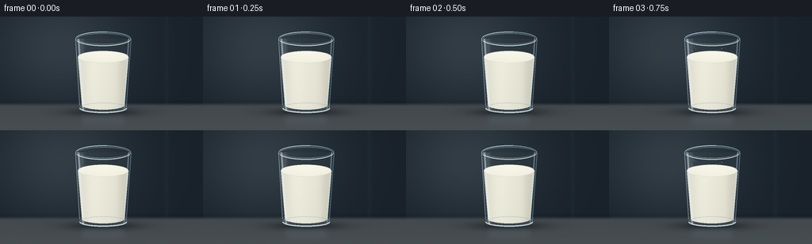
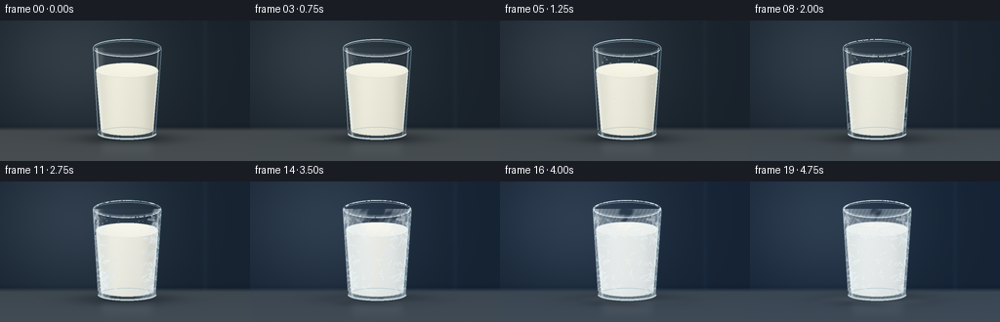

CODING AGENTS AS PIXEL WORLD MODELS
traex/GPT-6.1-Sol · phygen_093
点击播放 · 原生 RGB 像素
逐轮保存的候选
回放视频、检查图与代码变化。
每份候选均可单独播放。实际图片检查记录在下方工具轨迹中。
候选 01播放与检查图
点击播放 · 原生 RGB 像素


展开代码变化
--- 上一保存版本
+++ 本次保存版本
@@ -0,0 +1,212 @@
+from pathlib import Path
+import math
+import numpy as np
+from PIL import Image, ImageDraw, ImageFilter
+import artifact_io
+
+ROOT = Path(__file__).resolve().parent
+S=3
+W,H=256,144
+w,h=W*S,H*S
+Y,X=np.mgrid[0:h,0:w].astype(float)/S
+rng=np.random.default_rng(10393)
+noise=rng.normal(size=(h,w))
+
+def ease(x):
+ x=np.clip(x,0,1)
+ return x*x*(3-2*x)
+
+def mask_poly(coords):
+ m=Image.new('L',(w,h)); d=ImageDraw.Draw(m)
+ d.polygon([(round(x*S),round(y*S)) for x,y in coords],fill=255)
+ return np.asarray(m)/255.
+
+def ellipse(cx,cy,rx,ry):
+ return np.clip((1-((X-cx)/rx)**2-((Y-cy)/ry)**2)*S*min(rx,ry),0,1)
+
+def mix(im, color, a):
+ a=np.clip(a,0,1)[...,None]
+ return im*(1-a)+np.asarray(color)*a
+
+def pts(coords): return [(x*S,y*S) for x,y in coords]
+
+def line(d,coords,fill,width=1): d.line(pts(coords), fill=fill, width=max(1,round(width*S)))
+
+def ell(d,bbox,fill=None,outline=None,width=1):
+ d.ellipse(tuple(round(q*S) for q in bbox), fill=fill,outline=outline,width=max(1,round(width*S)))
+
+# The camera and every speck of rime stay fixed throughout the timelapse.
+cx=130.
+bodycoords=[(95,28),(165,28),(159,115)]
+bodycoords += [(130+29*math.cos(a),115+7*math.sin(a)) for a in np.linspace(0,math.pi,65)]
+bodycoords += [(95,28)]
+body=mask_poly(bodycoords)
+# Stationary nucleation map: crystals advance inward from the cold wall.
+radius=35-(Y-28)*6/87
+edge=np.clip((np.abs(X-cx)/(radius+.01)),0,1.3)
+patch=(np.sin(X*.28+Y*.11)+np.sin(Y*.42-X*.09)+np.sin(X*.65+Y*.49))*.045
+front=0.25+0.46*(1-np.minimum(edge,1))+0.19*np.clip((115-Y)/87,0,1)+patch
+fine=(np.sin(X*5.1+Y*3.1)+np.sin(X*3.5-Y*5.5)+noise*.7)/3
+# Individually growing fern-like ice crystals on the exterior.
+crystals=[]
+for i in range(125):
+ yy=rng.uniform(35,116)
+ rr=35-(yy-28)*6/87
+ if i<86:
+ side=-1 if i%2 else 1
+ xx=cx+side*rng.uniform(.73,1)*rr
+ else:
+ xx=cx+rng.uniform(-.72,.72)*rr
+ birth=float(.15+.45*(1-min(abs(xx-cx)/rr,1))+.17*(115-yy)/87+rng.uniform(-.06,.05))
+ angle=rng.uniform(-math.pi,math.pi)
+ length=rng.uniform(2,9)
+ crystals.append((xx,yy,birth,angle,length,rng.uniform(.45,1)))
+# Moisture beads are fixed in space and become small rime beads as the glass freezes.
+beads=[]
+for i in range(65):
+ yy=rng.uniform(35,115); rr=32-(yy-28)*6/87
+ xx=cx+rng.uniform(-.97,.97)*rr
+ beads.append((xx,yy,rng.uniform(.28,.72),rng.uniform(.04,.24)))
+
+frames=[]
+for n in range(20):
+ t=n/19
+ cold=ease((t-.05)/.95)
+ frozen=ease((t-.22)/.7)
+ # Defocused blue-grey freezer interior, lit from upper left.
+ glow=np.exp(-((X-76)/90)**2-((Y-38)/75)**2)
+ bg=np.stack([25+25*glow,34+27*glow,42+28*glow],axis=-1)
+ bg += cold*np.array([-4,1,11])
+ # Quiet vertical background panels and a very soft horizon.
+ bg += np.exp(-((X-210)/2.4)**2)[...,None]*np.array([3,4,5])
+ bg -= np.exp(-((Y-108)/2.5)**2)[...,None]*3
+ table=ease((Y-108)/6)
+ tablecol=np.stack([67+.12*(Y-110),73+.13*(Y-110),76+.15*(Y-110)],axis=-1)
+ tablecol+=cold*np.array([-9,-3,6])
+ bg=bg*(1-table[...,None])+tablecol*table[...,None]
+ bg+=noise[...,None]*.18
+ shadow=np.exp(-((X-cx)/44)**2-((Y-121)/5.3)**2)
+ bg=mix(bg,(10,17,23),shadow*.62)
+ # Restrained reflected milk glow on the polished cold surface.
+ reflected=np.exp(-((X-cx)/27)**8)*np.exp(-((Y-128)/10)**2)*ease((Y-122)/2)
+ bg=mix(bg,(166,177,184),reflected*.095)
+ # Clear glass: transmission plus a softly shaded curved wall.
+ bg=mix(bg,(119,147,157),body*(.045+.035*edge**3))
+ # The freezing milk expands slightly; it remains opaque, not transparent water ice.
+ sy=51-2.2*frozen
+ milkcoords=[(98,sy),(162,sy),(156.7,112)]
+ milkcoords += [(130+26.7*math.cos(a),112+5.7*math.sin(a)) for a in np.linspace(0,math.pi,65)]
+ milk=mask_poly(milkcoords)
+ surface=ellipse(cx,sy,32,7.5)
+ milk=np.maximum(milk,surface)
+ xn=(X-cx)/32
+ shade=8*np.exp(-((xn+.48)/.54)**2)-25*np.abs(xn)**3-9*np.exp(-((xn-.75)/.18)**2)
+ depthshade=-5*np.clip((Y-50)/70,0,1)
+ col=np.stack([231+shade+depthshade,230+shade+depthshade,215+shade+depthshade],axis=-1)
+ col+=frozen*np.array([-1,1,12])
+ col+=((fine*.7+noise*.25)*frozen)[...,None]
+ bg=mix(bg,col,milk)
+ # Top surface: liquid meniscus gives way to granular ivory frozen milk.
+ surfshade=5+4*(sy-Y)/8-5*((X-cx)/32)**2
+ topcol=np.stack([241+surfshade,239+surfshade,224+surfshade],axis=-1)+frozen*np.array([-1,1,10])
+ topcol+=(fine*(.5+2.1*frozen))[...,None]
+ bg=mix(bg,topcol,surface)
+ # A faint, broad frozen front has replaced the initial smooth liquid.
+ frost=ease((cold-front)*5)*body
+ frostgrain=np.clip(.69+.15*fine+.1*np.sin(X*1.6+Y*.8),.3,1)
+ frostcol=np.stack([221+fine*7,234+fine*6,241+fine*5],axis=-1)
+ bg=mix(bg,frostcol,frost*frostgrain*(.47+.18*edge**2))
+ # Long glass highlights retain transparency above the fill line.
+ left=np.exp(-((X-(99+.065*(Y-30)))/1.15)**2)*body
+ right=np.exp(-((X-(162-.064*(Y-30)))/.68)**2)*body
+ broad=np.exp(-((X-(103+.025*(Y-30)))/2.7)**2)*body
+ bg=mix(bg,(236,246,251),left*(.56-.2*frozen))
+ bg=mix(bg,(205,234,246),right*.46)
+ bg=mix(bg,(255,255,245),broad*.11*(1-.35*frozen))
+ image=Image.fromarray(np.uint8(np.clip(bg,0,255))).convert('RGBA')
+ layer=Image.new('RGBA',(w,h)); d=ImageDraw.Draw(layer)
+ # Curved lower foot of the tumbler, thick but clear glass.
+ ell(d,(100,109,160,122),outline=(141,174,185,125),width=.8)
+ d.arc((100*S,110*S,160*S,122*S),0,180,fill=(222,239,243,200),width=2*S)
+ d.arc((104*S,111*S,157*S,119*S),0,180,fill=(76,108,121,150),width=S)
+ line(d,[(95,29),(100,112)],(191,218,229,170),.65)
+ line(d,[(165,29),(159,114)],(146,187,204,160),.65)
+ # Thin dark meniscus, subtle cream rim.
+ d.arc(((98)*S,(sy-7.5)*S,162*S,(sy+7.5)*S),0,180,fill=(197,205,199,int(115*(1-frozen)+35)),width=max(1,S//2))
+ d.arc((98*S,(sy-7.5)*S,162*S,(sy+7.5)*S),185,340,fill=(255,255,244,130),width=S//2+1)
+ # Translucent condensation pearls; each freezes into a white granular speck.
+ for xx,yy,r,birth in beads:
+ alpha=ease((t-birth)*5)*(1-frozen*.73)
+ if alpha>.01:
+ ell(d,(xx-r,yy-r*1.2,xx+r,yy+r*1.2),fill=(119,150,157,int(68*alpha)),outline=(222,242,248,int(155*alpha)),width=.28)
+ ell(d,(xx-r*.5,yy-r*.65,xx,yy-r*.15),fill=(255,255,255,int(170*alpha)))
+ # Crystalline fern arms grow from multiple contact points, constrained to the wall.
+ frostlayer=Image.new('RGBA',(w,h)); fd=ImageDraw.Draw(frostlayer)
+ for xx,yy,birth,angle,L,strength in crystals:
+ grow=ease((cold-birth)*3.2)
+ if grow<=0: continue
+ length=L*grow
+ dx,dy=math.cos(angle),math.sin(angle)
+ alpha=int((100+95*strength)*min(1,grow*2))
+ end=(xx+dx*length,yy+dy*length)
+ line(fd,[(xx,yy),end],(235,248,252,alpha),.28+.12*strength)
+ for q in (.24,.44,.63,.81):
+ for sign in (-1,1):
+ branch=L*.25*(1-q*.6)*grow
+ a=angle+sign*.85
+ bx,by=xx+dx*length*q,yy+dy*length*q
+ ex,ey=bx+math.cos(a)*branch,by+math.sin(a)*branch
+ line(fd,[(bx,by),(ex,ey)],(232,245,252,int(alpha*.85)),.23)
+ if length>4:
+ px,py=bx+(ex-bx)*.56,by+(ey-by)*.56
+ b=a+sign*.85
+ line(fd,[(px,py),(px+math.cos(b)*branch*.4,py+math.sin(b)*branch*.4)],(239,249,252,int(alpha*.7)),.19)
+ if grow>.55:
+ ell(fd,(xx-.42,yy-.42,xx+.42,yy+.42),fill=(250,253,255,int(alpha*.85)))
+ fa=np.array(frostlayer)
+ fa[:,:,3]=(fa[:,:,3]*body).astype(np.uint8)
+ layer=Image.alpha_composite(layer,Image.fromarray(fa))
+ d=ImageDraw.Draw(layer)
+ # Glass lip with distinct front/back rims and a narrow clear opening.
+ ell(d,(95,19,165,37),outline=(157,191,208,190),width=1.1)
+ ell(d,(97,21,163,35),outline=(191,215,225,125),width=.5)
+ d.arc((95*S,19*S,165*S,37*S),15,160,fill=(236,247,250,235),width=S)
+ d.arc((95*S,19*S,165*S,37*S),195,278,fill=(204,231,241,220),width=S)
+ d.arc((98*S,22*S,162*S,34*S),200,330,fill=(51,78,91,120),width=max(1,S//2))
+ # Rime forms along the cold upper lip and around the frozen surface.
+ rg=np.random.default_rng(82)
+ for j in range(170):
+ a=rg.uniform(0,math.pi*2); rr=rg.uniform(.18,.68)
+ birth=rg.uniform(.26,.85)
+ aa=ease((cold-birth)*4)
+ if aa>0:
+ xx=130+34*math.cos(a); yy=28+8.7*math.sin(a)
+ ell(d,(xx-rr,yy-rr*.8,xx+rr,yy+rr*.8),fill=(239,249,253,int(220*aa)))
+ # The frozen top develops subtle branching fracture seams, not large shards.
+ cracklayer=Image.new('RGBA',(w,h)); cd=ImageDraw.Draw(cracklayer)
+ paths=[[(102,49),(111,48),(119,50),(126,49),(134,51),(143,49),(152,50)],
+ [(126,49),(128,46),(135,44),(139,43)],
+ [(134,51),(131,54),(136,56)],
+ [(111,48),(114,45),(112,44)],
+ [(143,49),(149,46),(154,46)]]
+ crackalpha=int(62*ease((t-.58)/.4))
+ for path in paths:
+ path=[(x,y-2.2*frozen) for x,y in path]
+ line(cd,path,(147,168,171,crackalpha),.35)
+ line(cd,[(x,y+.38) for x,y in path],(255,255,254,int(crackalpha*1.8)),.35)
+ ca=np.array(cracklayer);ca[:,:,3]=(ca[:,:,3]*surface).astype(np.uint8)
+ layer=Image.alpha_composite(layer,Image.fromarray(ca))
+ image=Image.alpha_composite(image,layer).convert('RGB')
+ arr=np.asarray(image).astype(float)
+ # A little pale frost spreads onto the surrounding cold metal at the base.
+ ground=np.exp(-((X-130)/38)**4-((Y-120.7)/3.1)**2)*ease((t-.45)/.55)
+ grains=np.clip(.45+.25*fine,0,1)
+ arr=mix(arr,(199,220,230),ground*grains*.23)
+ # Low, restrained cold haze curls near the base, not obscuring the milk.
+ haze=np.exp(-((Y-(122+1.7*np.sin((X-70)/17+t*3)))/3.4)**2)*np.exp(-((X-(126+9*np.sin(t*3)))/53)**4)
+ haze*=ease((t-.38)/.62)*.105
+ arr=mix(arr,(182,204,222),haze)
+ final=Image.fromarray(np.uint8(np.clip(arr,0,255))).resize((W,H),Image.Resampling.LANCZOS)
+ frames.append(np.asarray(final))
+artifact_io.save(np.stack(frames), ROOT)
+print('Saved 20 RGB frames, pixels.npz, and index.html')
可观测工具轨迹
实际执行的命令与返回图片。
命令 1exit 0
/bin/bash -lc 'ls -la && cat prompt.txt && cat GENERATION_RULES.md && cat task_spec.json'
命令 2exit 0
/bin/bash -lc 'cat artifact_io.py'
命令 3exit 0
/bin/bash -lc "cat > generate.py <<'PY'
from pathlib import Path
import math
import numpy as np
from PIL import Image, ImageDraw, ImageFilter
import artifact_io
ROOT = Path(__file__).resolve().parent
S=3
W,H=256,144
w,h=W*S,H*S
Y,X=np.mgrid[0:h,0:w].astype(float)/S
rng=np.random.default_rng(10393)
noise=rng.normal(size=(h,w))
def ease(x):
x=np.clip(x,0,1)
return x*x*(3-2*x)
def mask_poly(coords):
m=Image.new('L',(w,h)); d=ImageDraw.Draw(m)
d.polygon([(round(x*S),round(y*S)) for x,y in coords],fill=255)
return np.asarray(m)/255.
def ellipse(cx,cy,rx,ry):
return np.clip((1-((X-cx)/rx)**2-((Y-cy)/ry)**2)*S*min(rx,ry),0,1)
def mix(im, color, a):
a=np.clip(a,0,1)[...,None]
return im*(1-a)+np.asarray(color)*a
def pts(coords): return [(x*S,y*S) for x,y in coords]
def line(d,coords,fill,width=1): d.line(pts(coords), fill=fill, width=max(1,round(width*S)))
def ell(d,bbox,fill=None,outline=None,width=1):
d.ellipse(tuple(round(q*S) for q in bbox), fill=fill,outline=outline,width=max(1,round(width*S)))
# The camera and every speck of rime stay fixed throughout the timelapse.
cx=130.
bodycoords=[(95,28),(165,28),(159,115)]
bodycoords += [(130+29*math.cos(a),115+7*math.sin(a)) for a in np.linspace(0,math.pi,65)]
bodycoords += [(95,28)]
body=mask_poly(bodycoords)
# Stationary nucleation map: crystals advance inward from the cold wall.
radius=35-(Y-28)*6/87
edge=np.clip((np.abs(X-cx)/(radius+.01)),0,1.3)
patch=(np.sin(X*.28+Y*.11)+np.sin(Y*.42-X*.09)+np.sin(X*.65+Y*.49))*.045
front=0.25+0.46*(1-np.minimum(edge,1))+0.19*np.clip((115-Y)/87,0,1)+patch
fine=(np.sin(X*5.1+Y*3.1)+np.sin(X*3.5-Y*5.5)+noise*.7)/3
# Individually growing fern-like ice crystals on the exterior.
crystals=[]
for i in range(125):
yy=rng.uniform(35,116)
rr=35-(yy-28)*6/87
if i<86:
side=-1 if i%2 else 1
xx=cx+side*rng.uniform(.73,1)*rr
else:
xx=cx+rng.uniform(-.72,.72)*rr
birth=float(.15+.45*(1-min(abs(xx-cx)/rr,1))+.17*(115-yy)/87+rng.uniform(-.06,.05))
angle=rng.uniform(-math.pi,math.pi)
length=rng.uniform(2,9)
crystals.append((xx,yy,birth,angle,length,rng.uniform(.45,1)))
# Moisture beads are fixed in space and become small rime beads as the glass freezes.
beads=[]
for i in range(65):
yy=rng.uniform(35,115); rr=32-(yy-28)*6/87
xx=cx+rng.uniform(-.97,.97)*rr
beads.append((xx,yy,rng.uniform(.28,.72),rng.uniform(.04,.24)))
frames=[]
for n in range(20):
t=n/19
cold=ease((t-.05)/.95)
frozen=ease((t-.22)/.7)
# Defocused blue-grey freezer interior, lit from upper left.
glow=np.exp(-((X-76)/90)**2-((Y-38)/75)**2)
bg=np.stack([25+25*glow,34+27*glow,42+28*glow],axis=-1)
bg += cold*np.array([-4,1,11])
# Quiet vertical background panels and a very soft horizon.
bg += np.exp(-((X-210)/2.4)**2)[...,None]*np.array([3,4,5])
bg -= np.exp(-((Y-108)/2.5)**2)[...,None]*3
table=ease((Y-108)/6)
tablecol=np.stack([67+.12*(Y-110),73+.13*(Y-110),76+.15*(Y-110)],axis=-1)
tablecol+=cold*np.array([-9,-3,6])
bg=bg*(1-table[...,None])+tablecol*table[...,None]
bg+=noise[...,None]*.18
shadow=np.exp(-((X-cx)/44)**2-((Y-121)/5.3)**2)
bg=mix(bg,(10,17,23),shadow*.62)
# Restrained reflected milk glow on the polished cold surface.
reflected=np.exp(-((X-cx)/27)**8)*np.exp(-((Y-128)/10)**2)*ease((Y-122)/2)
bg=mix(bg,(166,177,184),reflected*.095)
# Clear glass: transmission plus a softly shaded curved wall.
bg=mix(bg,(119,147,157),body*(.045+.035*edge**3))
# The freezing milk expands slightly; it remains opaque, not transparent water ice.
sy=51-2.2*frozen
milkcoords=[(98,sy),(162,sy),(156.7,112)]
milkcoords += [(130+26.7*math.cos(a),112+5.7*math.sin(a)) for a in np.linspace(0,math.pi,65)]
milk=mask_poly(milkcoords)
surface=ellipse(cx,sy,32,7.5)
milk=np.maximum(milk,surface)
xn=(X-cx)/32
shade=8*np.exp(-((xn+.48)/.54)**2)-25*np.abs(xn)**3-9*np.exp(-((xn-.75)/.18)**2)
depthshade=-5*np.clip((Y-50)/70,0,1)
col=np.stack([231+shade+depthshade,230+shade+depthshade,215+shade+depthshade],axis=-1)
col+=frozen*np.array([-1,1,12])
col+=((fine*.7+noise*.25)*frozen)[...,None]
bg=mix(bg,col,milk)
# Top surface: liquid meniscus gives way to granular ivory frozen milk.
surfshade=5+4*(sy-Y)/8-5*((X-cx)/32)**2
topcol=np.stack([241+surfshade,239+surfshade,224+surfshade],axis=-1)+frozen*np.array([-1,1,10])
topcol+=(fine*(.5+2.1*frozen))[...,None]
bg=mix(bg,topcol,surface)
# A faint, broad frozen front has replaced the initial smooth liquid.
frost=ease((cold-front)*5)*body
frostgrain=np.clip(.69+.15*fine+.1*np.sin(X*1.6+Y*.8),.3,1)
frostcol=np.stack([221+fine*7,234+fine*6,241+fine*5],axis=-1)
bg=mix(bg,frostcol,frost*frostgrain*(.47+.18*edge**2))
# Long glass highlights retain transparency above the fill line.
left=np.exp(-((X-(99+.065*(Y-30)))/1.15)**2)*body
right=np.exp(-((X-(162-.064*(Y-30)))/.68)**2)*body
broad=np.exp(-((X-(103+.025*(Y-30)))/2.7)**2)*body
bg=mix(bg,(236,246,251),left*(.56-.2*frozen))
bg=mix(bg,(205,234,246),right*.46)
bg=mix(bg,(255,255,245),broad*.11*(1-.35*frozen))
image=Image.fromarray(np.uint8(np.clip(bg,0,255))).convert('RGBA')
layer=Image.new('RGBA',(w,h)); d=ImageDraw.Draw(layer)
# Curved lower foot of the tumbler, thick but clear glass.
ell(d,(100,109,160,122),outline=(141,174,185,125),width=.8)
d.arc((100*S,110*S,160*S,122*S),0,180,fill=(222,239,243,200),width=2*S)
d.arc((104*S,111*S,157*S,119*S),0,180,fill=(76,108,121,150),width=S)
line(d,[(95,29),(100,112)],(191,218,229,170),.65)
line(d,[(165,29),(159,114)],(146,187,204,160),.65)
# Thin dark meniscus, subtle cream rim.
d.arc(((98)*S,(sy-7.5)*S,162*S,(sy+7.5)*S),0,180,fill=(197,205,199,int(115*(1-frozen)+35)),width=max(1,S//2))
d.arc((98*S,(sy-7.5)*S,162*S,(sy+7.5)*S),185,340,fill=(255,255,244,130),width=S//2+1)
# Translucent condensation pearls; each freezes into a white granular speck.
for xx,yy,r,birth in beads:
alpha=ease((t-birth)*5)*(1-frozen*.73)
if alpha>.01:
ell(d,(xx-r,yy-r*1.2,xx+r,yy+r*1.2),fill=(119,150,157,int(68*alpha)),outline=(222,242,248,int(155*alpha)),width=.28)
ell(d,(xx-r*.5,yy-r*.65,xx,yy-r*.15),fill=(255,255,255,int(170*alpha)))
# Crystalline fern arms grow from multiple contact points, constrained to the wall.
frostlayer=Image.new('RGBA',(w,h)); fd=ImageDraw.Draw(frostlayer)
for xx,yy,birth,angle,L,strength in crystals:
grow=ease((cold-birth)*3.2)
if grow<=0: continue
length=L*grow
dx,dy=math.cos(angle),math.sin(angle)
alpha=int((100+95*strength)*min(1,grow*2))
end=(xx+dx*length,yy+dy*length)
line(fd,[(xx,yy),end],(235,248,252,alpha),.28+.12*strength)
for q in (.24,.44,.63,.81):
for sign in (-1,1):
branch=L*.25*(1-q*.6)*grow
a=angle+sign*.85
bx,by=xx+dx*length*q,yy+dy*length*q
ex,ey=bx+math.cos(a)*branch,by+math.sin(a)*branch
line(fd,[(bx,by),(ex,ey)],(232,245,252,int(alpha*.85)),.23)
if length>4:
px,py=bx+(ex-bx)*.56,by+(ey-by)*.56
b=a+sign*.85
line(fd,[(px,py),(px+math.cos(b)*branch*.4,py+math.sin(b)*branch*.4)],(239,249,252,int(alpha*.7)),.19)
if grow>.55:
ell(fd,(xx-.42,yy-.42,xx+.42,yy+.42),fill=(250,253,255,int(alpha*.85)))
fa=np.array(frostlayer)
fa[:,:,3]=(fa[:,:,3]*body).astype(np.uint8)
layer=Image.alpha_composite(layer,Image.fromarray(fa))
d=ImageDraw.Draw(layer)
# Glass lip with distinct front/back rims and a narrow clear opening.
ell(d,(95,19,165,37),outline=(157,191,208,190),width=1.1)
ell(d,(97,21,163,35),outline=(191,215,225,125),width=.5)
d.arc((95*S,19*S,165*S,37*S),15,160,fill=(236,247,250,235),width=S)
d.arc((95*S,19*S,165*S,37*S),195,278,fill=(204,231,241,220),width=S)
d.arc((98*S,22*S,162*S,34*S),200,330,fill=(51,78,91,120),width=max(1,S//2))
# Rime forms along the cold upper lip and around the frozen surface.
rg=np.random.default_rng(82)
for j in range(170):
a=rg.uniform(0,math.pi*2); rr=rg.uniform(.18,.68)
birth=rg.uniform(.26,.85)
aa=ease((cold-birth)*4)
if aa>0:
xx=130+34*math.cos(a); yy=28+8.7*math.sin(a)
ell(d,(xx-rr,yy-rr*.8,xx+rr,yy+rr*.8),fill=(239,249,253,int(220*aa)))
# The frozen top develops subtle branching fracture seams, not large shards.
cracklayer=Image.new('RGBA',(w,h)); cd=ImageDraw.Draw(cracklayer)
paths=[[(102,49),(111,48),(119,50),(126,49),(134,51),(143,49),(152,50)],
[(126,49),(128,46),(135,44),(139,43)],
[(134,51),(131,54),(136,56)],
[(111,48),(114,45),(112,44)],
[(143,49),(149,46),(154,46)]]
crackalpha=int(62*ease((t-.58)/.4))
for path in paths:
path=[(x,y-2.2*frozen) for x,y in path]
line(cd,path,(147,168,171,crackalpha),.35)
line(cd,[(x,y+.38) for x,y in path],(255,255,254,int(crackalpha*1.8)),.35)
ca=np.array(cracklayer);ca[:,:,3]=(ca[:,:,3]*surface).astype(np.uint8)
layer=Image.alpha_composite(layer,Image.fromarray(ca))
image=Image.alpha_composite(image,layer).convert('RGB')
arr=np.asarray(image).astype(float)
# A little pale frost spreads onto the surrounding cold metal at the base.
ground=np.exp(-((X-130)/38)**4-((Y-120.7)/3.1)**2)*ease((t-.45)/.55)
grains=np.clip(.45+.25*fine,0,1)
arr=mix(arr,(199,220,230),ground*grains*.23)
# Low, restrained cold haze curls near the base, not obscuring the milk.
haze=np.exp(-((Y-(122+1.7*np.sin((X-70)/17+t*3)))/3.4)**2)*np.exp(-((X-(126+9*np.sin(t*3)))/53)**4)
haze*=ease((t-.38)/.62)*.105
arr=mix(arr,(182,204,222),haze)
final=Image.fromarray(np.uint8(np.clip(arr,0,255))).resize((W,H),Image.Resampling.LANCZOS)
frames.append(np.asarray(final))
artifact_io.save(np.stack(frames), ROOT)
print('Saved 20 RGB frames, pixels.npz, and index.html')
PY
python generate.py"视觉工具实际返回图片 1

保存候选 1 份；完成命令 3 次；可验证图片返回 1 张。原始 API 响应与完整日志保留在本地。